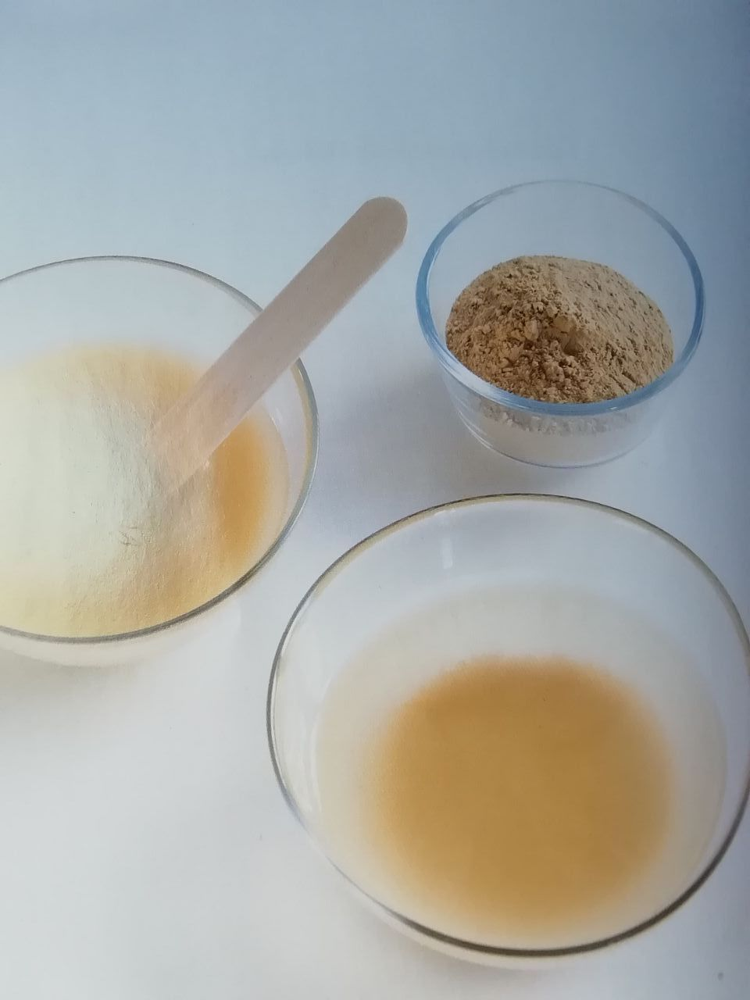

Unterstütze deine Selbstheilungskräfte & deine Verjüngung!
Mit all diesen täglichen, einfachen Therapievorschlägen, arbeiten wir seit Jahren mit positivem Energiegewinn...
< naturelle Impfung > Heil-Nahrung
Chlorophyll Energiegetränk
Wildgräser / Wildkräuter / Baumblätter
Gräser & Kräuter im Morgentau, bevor die Sonnenstrahlen sie erreichen, mit deinen Fingernägeln oder einem Keramikmesser abernten.
In einen guten Entsafter (z. B. Angeljuicer) o. mit Handarbeit in einen Steinmörser geben & zerklopfen / mit etwas Quellwasser zerreiben, durch ein Hanfsäcklein pressen...
Das Alfalfa-Grün (Kleesorte) hat sehr tiefe Wurzeln, die Mineralien aus der Erdmutter lösen können.
Wir sammeln unsere Wildkräuter im Waldbereich mit humusreichem Boden, der alle wichtigen Mineralien & Spurenelementen zur Verfügung stellt!
Chlorophyll Smoothie "Ayurvedisch" 🕉️
(süß, sauer, scharf, salzig, herb, bitter, zusammenziehend)
Wildkräuter/ junge Baumblätter-Mischung aller Geschmacksempfindungen.
Bevor die Sonnenstrahlen die zarten Blätter erreichen, mit den Fingernägel oder einem Keramikmesser abernten. Rasch in einen Hochgeschwindigkeits-Mixer geben & zusammen mit frischen saisonalen Früchten, ca. eine Minute zermixen.
Damit es optimal bioverfügbar wird. Mischungsverhältnis: Wildkräuter, Baumblätter / frische Früchte 3:1
Da das wichtige Einspeicheln / kauen nicht vergessen werden darf, wäre es von Vorteil, den Smoothie noch reichlich mit Früchtestückchen & Blümchen zu garnieren, sodass ein kunterbuntes Mandala entsteht.
Zum Schluss kannst du deine kosmische Nahrung mit einem Mantra segnen...
{kind=link}
{kind=link}
{kind=link}
{kind=link}
Moor-Pulver/ alte abgestorbene Humusböden, sind mineralienreich & enthalten Huminsäure, welche Roundup-Monsanto-Gifte ausleiten können!!!
Zellreinigendes Ayurvedisches Heilwasser
Einen Kupferkessel über Nacht mit Quellwasser (o. gefilterten Trinkwasser) befüllen.
Am nächsten Morgen ca. 15 Minuten köcheln lasen, evtl. abfüllen (optimal in Glasthermoskanne) und tagsüber lauwarm zu sich nehmen.
Kann auch zur Einnahme von Nahrungsergänzung / Mineralien lauwarm verwendet werden, um es tiefer in die Körpergewebezellen zu transportieren...
Natürliche Probiotika (Darmgesundheit)!!!
- Baum-Harz-Tee...(Veganes Propolis)
Baumharz (Kiefer, Fichte, ect.) mit lauwarmen Quellwasser übergießen, über Nacht ziehen lassen, durch ein Teesieb filtern - selbst produziertes Sauer-Kraut mit Himalaya Kristallsalz... (Milchsäurebakterien)
{kind=link}
{kind=link}
Natürliche Gesundheit mit HEILERDE
Heilerden können bei jeder Erkrankung oder Verletzung angewendet werden!
Anwendungsmöglichkeiten: äußerlich / innerlich- oral/ annual,
-unterstützt die körpereigenen Heilungsprozess
-Reinigungswirkung & Harmonisierung,
-Zuführung wichtiger Mineralstoffe & Spurenelemente
Schon im Mittelalter sorgten die Alchemisten für die Verbreitung der Heilerden.
Damals schon Hervorragende Wirkungen bei vielen Erkrankungen, vor allem bei der Pest.
Pfarrer Sebastian Kneipp (1821 - 1897) mit seinen verschiedenen Natur-Heil-Methoden, setzte Heilerden in einer viermonatigen Kneippkur mit vegetarischer Lebensweise, Sonnenlicht, sauberer Luft & Quellwasser, Lindrung & schließlich durchschlagen Heiler Folge. Gründete Er am 1. April 1896 eine Naturheilanstalt in Eckertal im Harz (Jungborn).
Heilerden enthalten außer Jod alle lebensnotwendigen Elemente (Mineralien) in ihrer natürlichen Zusammensetzung. Erst durch die Verdauung im Magen, werden sie für den Körper verwendbar.
Endhaltene Mineralien & Spurenelemente
Sie bindet krankheitserregende Mikroorganismen 54% - 99,99%. pathogen Keime (Bakterien, Hefe- & Schimmelpilze)
Heilende Erden sind ein dynamisches Systhem. Sie nehmen schädigende Stoffe auf & geben Energie & Mineralien ab. Außerdem dienen sie als Katalysator, wodurch zu träge ablaufende Stoffwechselvorgänge angeregt, aber nicht verändert werden.
Sie bindet überschüssige Säuren & Basen bei der oralen Einnahme kommt es im Magen zu einem Ausgleich des Säure- Basen- Verhältnisses. Wodurch die physiologische Verhältnisse wider hergestellt & die Magenschleimhaut von aggressiven Substanzen geschützt wird. (Sodbrennen, Magenschleimhautebtzündungen, Magendruck, Völlegefühl, Reizmagen ect.).
Die in der Heilerde Endhaltene Mineralien & Spurenelemente werden im Magen aufgeschlossen & dem Körper verfügbar gemacht.
Auch die Endsäuerung des Organismus wird durch die indirekte Beeinflussung über den pH-Wet des Blutes geregelt.
Heilerde bindet Gifte im Darm!
Der Darm - das zentrale Organ ( Hippokrates erkannte das, alles Übel im Darm wohnt!
Heute wissen wir, daß der Darm mit einer inneren Oberfläche von 300 qm.das größte Organ des menschlichen Körpers darstellt & weit mehr als die Verdauungfunktion zu erfüllen hat.
Durch die Einnahme von Heilerde werden krankheitsauslösende Stoffe (auch aus der Nahrung), Mikroorganismen, Stoffwechselgifte & giftige Darmgase aufgenommen& gebunden. Diese Neutralisieren Stoffe können dann problemlos vom Körper ausgeschieden werden.
Organische Substanzen, Nährwerte wie Vitamine, Mineralien, Spurenelemente & Aminosäuren bleiben dem Körper erhalten, weshalb man von einer selektiven Adsorptionsfähigkeit der Heilerde spricht.
Das ganze Verdauungssystem wird durch diese tiefgreifende Wirkung gereinigt & der Organismus endgiften.
Heilende wirkt regenerierend & ordnen auf gestörte Funktionen. Die feinen Erdpatikel sorgen für eine milde Darm Massage & wirken als Ballaststoffe, wodurch der Darm angeregt, aber nicht gereizt wird. Es kommt zu einer Regulierung des Stuhlgang. Da das Immunsystem zu 80% im Lymphgewebe des Darms Dünndarm - Peyersche Plaques & Blinddarm) sitzt, wird auch dieses positiv beeinflusst. Die Immunabwehr wird stabilisiert, was nicht nur für Allergiker von Bedeutung ist.
Jede Erkrankung ist somit durch eine Darmreinigung mit Heilerde positiv zu beeinflussen.
Innere Anwendng:
-Heilerde kapseln, 1 Teel. Endspicht 3 Kapseln
-Einnahme von Heilerdepulver & nachtrinken
-Einspeicheln im Mund
-Das konzentrierte Heiledewasser
-Rollkur bei Magenerkrankungen:
das Heilerdnwasser langsam unter mehrmaligen Aufrühren, in kleinen schlucken trinken & sich sofort ins Bett legen zuerst 5 Min. auf Rücken, dann 5 Min. auf rechte Seite, dann 5 Min. auf Bauch, dann 5 Min. auf linke Seite
Dadurch legt sich die Heilerde schützend über die Magenschleimhaut. Reizungen & Endzündungen beruhigen sich & heilen sehr schnell ab.
Der Heilerde - Einlauf
Bei Fieber, Fastenkuren, Darmerkrankungen, Verstopfung, Infektionskrankheiten, zur Stärkung des Immunsystems, bei Darmparasieten
(Spulwürmer, Madenwümer, Bandwürmer, Pilze & Bakterien)
(eine Mischung aus 1 Liter lauwarmen Wasser oder Kamillentee mit 2 - 3 Esslöffel Heilerde).
Heilerde ist ideal bei Hauterkrankungen
Die Haut - Multifunktionsorgan
Ihre Aufgabe :
-Sie ist das größte Sinnesorgan (Druck, Berührung,Schmerz, Erschütterung, Tast-, Kälte- & Wärmeempfindung).
-Regulation wärmehaushaltes
-Schutz & Abwehr von Schädlichen Einflüssen
-Ausscheidung von Schädlichen Stoffwechselabbauprodukten
-Aufnahmefunktion
-Speicherung von Fett, Blut Wasser, Vitaminen & Mineralien
Durch Hauterkrankungen zeigt uns der Körper, das das Innere Gleichgewicht aus den Fugen geraten ist & über das Ventil der Endzündung toxischer Stoffwechselprodukte abbauen möchte.
Eine Therapie chronischer Hauterkrankungen muss ausdiesem Grund immer von innen & außen erfolgen.
Bei der äußeren Anwendung der Heilerde trocknet die Heilerde von innen nach aussen ab. Dabai entsteht eine Saugwirkung, die endzündungsbegkeitende Krankheitskeime, Giftstoffe, Stoffwechselprodukte & Wundsekrete (Eiter) ansaugt & bindet. Durch die Verdunstungskälte werden Blutgefäße verengt & Schmerzen helindert. Dir daraus folgende Paste sorgt durch die Erweiterung der Gefäße für eine vermehrte Durchblutung von Haut & Gewerbe. Dies führt zu einem vorübergehenden Wärmegefühl. Das Gewebe wird vermehrt mit Sauerstoff & Nährstoffen versorgt & der Stoffwechsel angeregt. Die Hautverletzung trocknet & schwillt ab. Kleinste Mineral Teilchen sorgen für eine Anregung de Blutgerinnung & des Wundverschlusses. Dadurch kommt es zu einer schnellen, narbenlosen Heilung.
Als Gesichtsmasken, bei unserer Haut, nimmt sie Fett, Talg & in den Poren befindliche Stoffe auf. Endzündungen können deshalb sehr schnell b klingen. Der Säure- & Elektrolytmantel der Haut wird durch die in der Heilerde enthaltenen Mineralien erneuert (Transmineralisation).
Innere Organe von außen heilen
Aber auch Funktionstörungen innerer Organe lassen sich über die Reflexionen (Dermatome) der Haut mit Heilerde beinflussen.
Äußere Anwendung:
-Bei Verbrennungen, Sodbrennen, Wunden (schwammen, Kratzern, Rissen usw.) Ausschläen (Windeldermitis),
Offene Geschwüre, übermäßige Schweisabsonderungn, Ekzeme, zur Schmerzlinderung bei Hautbeschwerden, Hautjucken, Insektenstichen, als Babypuder...
-Verschiedene Wickel
-Gurgelwasser
-Nasenbad
-Teil- & Vollbad
-Das Felke- Bad ( das Lehmbad wird unter freiem Himmel genommen & dient der Reinigung, Endschlackung & Regeneration.
Auch alternativ: als Shampoo & Seife oder Zahnpflege verwendbar!
für Bäume, Kompost, Dünger...
BUCHTIPP: 👍 Natürlich gesund mit Heilerde, AT Verlag von Monika Mayer 👍